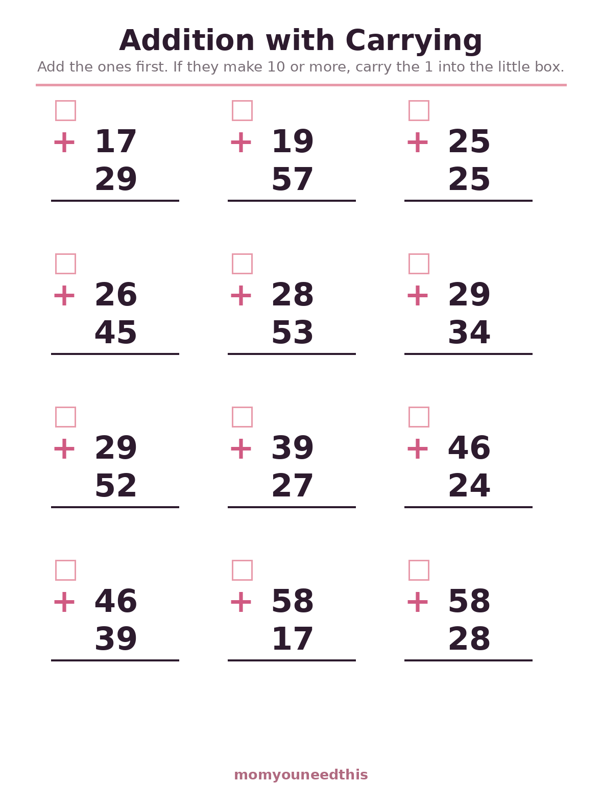
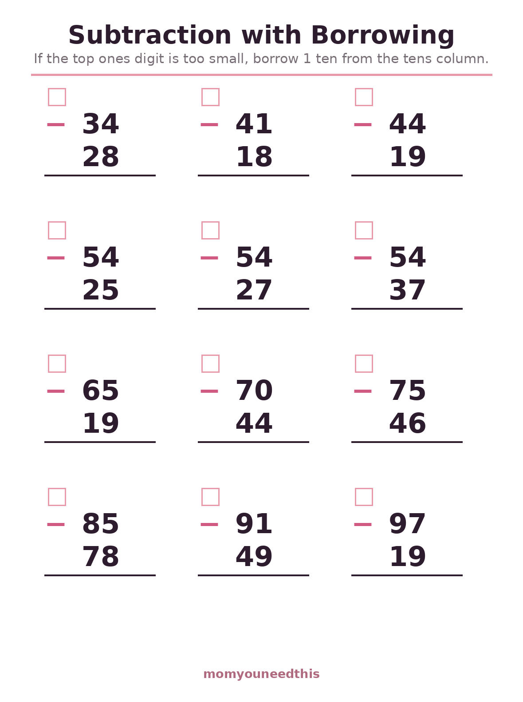
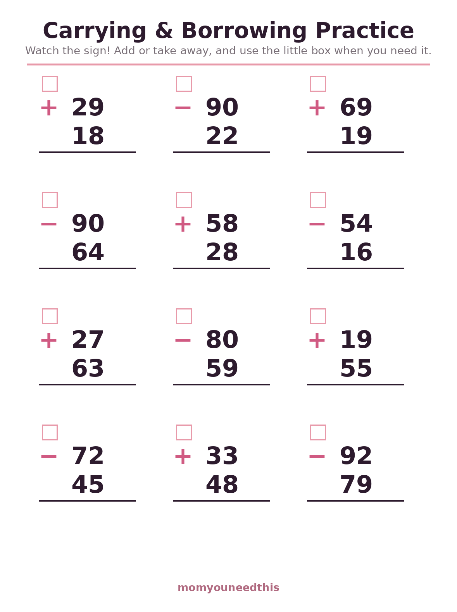

Addition & Subtraction with Carrying Worksheets Two-Digit Practice with Regrouping, Step by Step
Free addition and subtraction with carrying worksheets for ages 6 to 8. Your child practices two-digit addition with regrouping, subtraction with borrowing, and a mixed sheet — every problem is set out in columns with a little box for the carried number, so the new step is easy to see and hard to forget. Print at home, no signup.
Last updated: October 21, 2026
Quick Answer
These free carrying worksheets give children three printable sheets: two-digit addition where every problem needs regrouping, two-digit subtraction where every problem needs borrowing, and a mixed sheet that teaches them to check the sign first. Each problem sits in columns with a small box above the tens column for the carried or borrowed number. Made for ages 6 to 8.
At a Glance
- Skill: Two-digit addition & subtraction with regrouping
- Ages: 6–8 (grades 1–2)
- Sheets: 3 (addition, subtraction, mixed)
- Problems: 12 per sheet, all needing carrying or borrowing
- Format: Column layout with a carried-number box
- Cost: Free — print at home
➕ Addition with Carrying
Every problem on this sheet needs the new step: the ones column always makes 10 or more, so your child always has something to carry. Starting with a sheet where carrying happens every time — instead of once in a while — builds the habit fast: add the ones, write the carried 1 in the box, then add the tens.

➕ Download Your Free Addition with Carrying Worksheet
12 two-digit addition problems, every one with regrouping, and a little box for the carried 1.
⬇️ Download Free Worksheet 🖨️ Print🎁 Free printable for ages 5–7
➖ Subtraction with Borrowing
Borrowing is carrying in reverse, and it clicks fastest right after carrying makes sense. On this sheet the top ones digit is always too small, so your child borrows a ten every time: cross nothing out yet — just turn the ones into a teen number and subtract. The box above the tens column holds the borrowed ten where they can see it.

➖ Download Your Free Subtraction with Borrowing Worksheet
12 two-digit subtraction problems, every one needing a borrowed ten.
⬇️ Download Free Worksheet 🖨️ Print🎁 Free printable for ages 5–7
🔀 Mixed Carrying & Borrowing
Real math homework mixes the two, and the most common mistake at this stage is adding when the sign says subtract. This sheet alternates the operations so your child has to read the sign before touching a number — the habit that prevents most regrouping errors.

🔀 Download Your Free Mixed Practice Worksheet
12 problems mixing carrying and borrowing — check the sign before you start.
⬇️ Download Free Worksheet 🖨️ Print🎁 Free printable for ages 5–7
🌱 Why the Little Box Matters
Regrouping fails most often in the working memory, not in the math: a child adds 7 + 9, holds the 1 in their head, adds the tens, and forgets the extra ten entirely. Writing the carried number down the instant it appears moves it out of memory and onto the page. Once the habit is automatic, the box quietly stops being needed — that is the sign it worked.
🖨️ How to Use These Worksheets
- Start with plain two-digit work. If adding 34 + 25 (no carrying) is not easy yet, begin on the addition worksheets and come back — carrying builds straight on top of them.
- Do one problem out loud together. Say the steps as you go: ones first, carry the ten, then tens. Hearing the sequence a few times makes it stick.
- Insist on the box, kindly. The carried number goes in the box before anything else happens. It feels slow for a day and then becomes automatic.
- Keep it to one sheet. Twelve problems is a full session at this age. Stop on a success and let the skill settle overnight.
➕ More Math for Moms & Kids
📖 Math Word Problems
Carrying and borrowing hidden inside real stories. Try word problems.
✖️ Multiplication Worksheets
Equal groups, arrays and the times-table chart. Start multiplication.
🔢 Odd & Even Numbers
A gentle pattern break between practice sets. Explore odd and even.
📝 Addition Worksheets
Back to plain addition — sums to 5, 10 and 20. Keep adding.
❓ Addition & Subtraction with Carrying FAQ
What does carrying mean in addition?
Carrying means moving an extra ten to the tens column. When the ones column adds up to 10 or more — 7 + 9 = 16, for example — your child writes the 6 in the ones place and carries the 1 ten over to be added with the tens. It is also called regrouping.
What age are carrying worksheets for?
Most children meet carrying in grade 1 or 2, around ages 6 to 8, after they can add two-digit numbers without carrying. Every child moves at their own pace — solid plain two-digit addition matters more than any birthday.
How is borrowing different from carrying?
Borrowing is the subtraction twin of carrying. When the top ones digit is too small to subtract from — 42 − 17, for example — your child borrows 1 ten from the tens column, turning the 2 ones into 12 so the subtraction works.
My child keeps forgetting the carried number. What helps?
That is exactly what the little box above the tens column is for: writing the carried 1 down the moment it appears, before doing anything else. Coins or base-ten blocks beside the page also help — trading ten ones for one ten makes the idea visible.
Are these carrying worksheets free?
Yes — all three worksheets are free to print at home, with no signup and no email. Print them as many times as your child needs.
Where can I find more addition and subtraction worksheets?
Right here — the three sheets on this page cover carrying, borrowing and mixed practice, ready to print. Work through one at a time and let your child master each step before moving on.